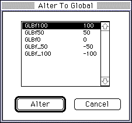
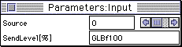

<HTML>
<HEAD>
<TITLE> Added 1995.12.1 </TITLE>
</HEAD><BODY BGCOLOR="#ffffff">
<P> <A HREF="text4.htm"> Return to previous page </A> | <A HREF="../soundm.htm"> Return to menu </A> </BR> </P >
<HR>
<BLOCKQUOTE>
<P>
▲ What to do when using DSP EFFECT Q-SOUND8 module
</P>
<P>
An error message will be displayed if Link and Download are performed as they are. Follow the steps below to resolve the problem.
</P>

<OL>
Select the Send Module Send Level in the <LI> window and invert it.
<LI> Global Coef Select GLBf100 in Alter To Global from the menu, highlight it, and press the Alter button.
</OL>
<OL START=3>
  <LITYPE=1>
<LI> Send Level display changes to GLBf100.
</OL>
</BLOCKQUOTE>

<BLOCKQUOTE>
<OL START=4>
  <LITYPE=1>
<LI> Do more than 8 Input modules.
</OL>
</BLOCKQUOTE>

<BLOCKQUOTE>
<P>
★ Do not set VOICE parameter PLAY MODE other than POLY in the TONE editor. If you select any other option, troubles such as notes not sounding off will occur.
</P>
</BLOCKQUOTE>
<HR>
<P> <A HREF="text4.htm"> Return to previous page </A> | <A HREF="../soundm.htm"> Return to menu </A> </BR> </P >
</BODY>
</HTML>